Longren Antarctic Newsletter #09 - 09.11.2023 ------------------------------ Dearest people, After a year in Antarctica, I've made it back to the land of the living. That is a bit of an overstatement; the frozen continent is full of things like little microbes, penguins, orcas, whales, and more! However, as I write this from a busy Texas airport, Antarctica feels so calm and empty in comparison. Looking back, the past year has been quite nice to me. I've already begun reflecting on the experiences I have had and I know it will take me a moment for the year to fully set in. Thus, I think I will leave you with a dozen photos from the past couple months to summarize my return to normal life. I don't know when I will return to Antarctica. Being there has given me an even greater desire for adventure, more than I knew I had. I hope that these newsletters have inspired you, provided a bit of knowledge, and helped you feel connected with me as I have been away. Until we see each other again, please enjoy the final photos from my time on the ice. 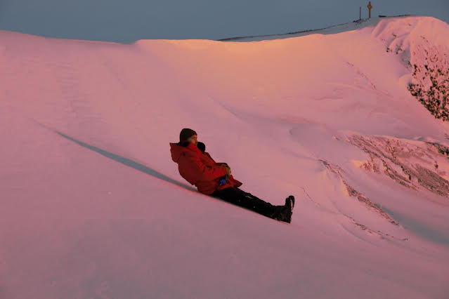 Sliding down a hill near the 'beach', a popular spot to watch the sun near the frozen ocean. 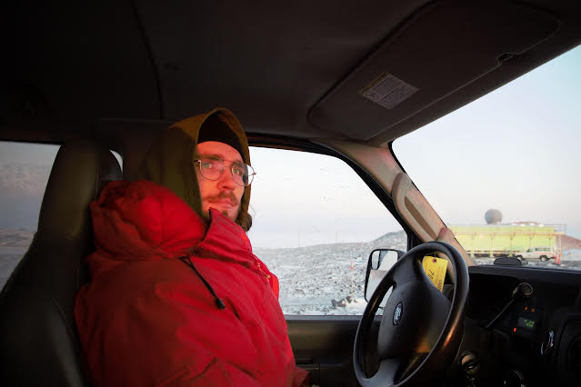 Being disturbed by the sun on a drive up and out of town to check on instruments. 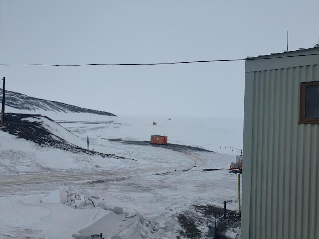 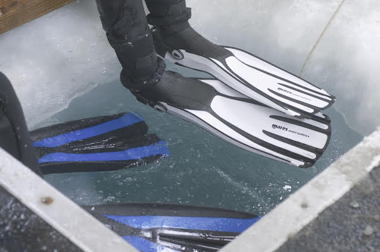 A view of a few 'fish huts' on the ice (top). Divers entering the ocean through a hole within a fish hut (bottom). 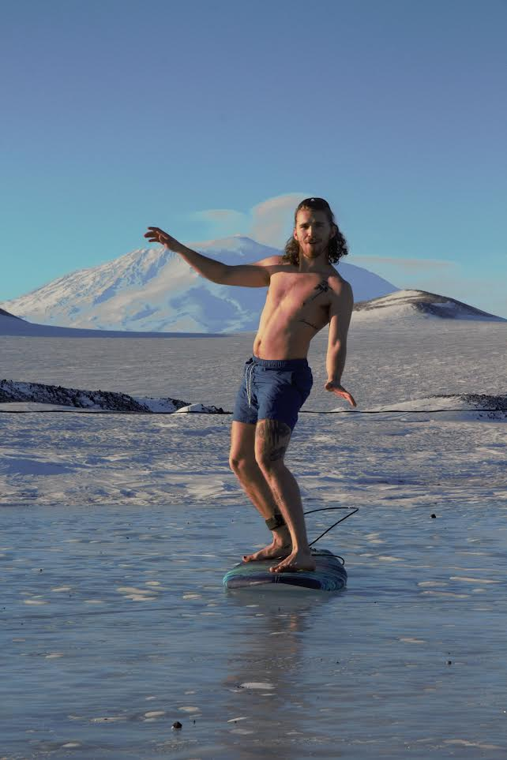 Surfing on a frozen pond. 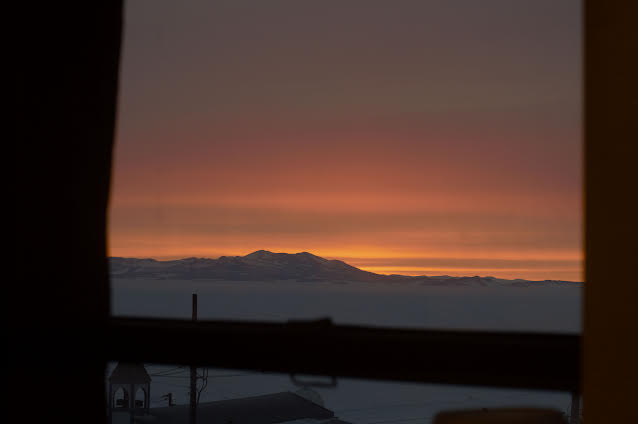 Watching the sun not set from the dorm room. 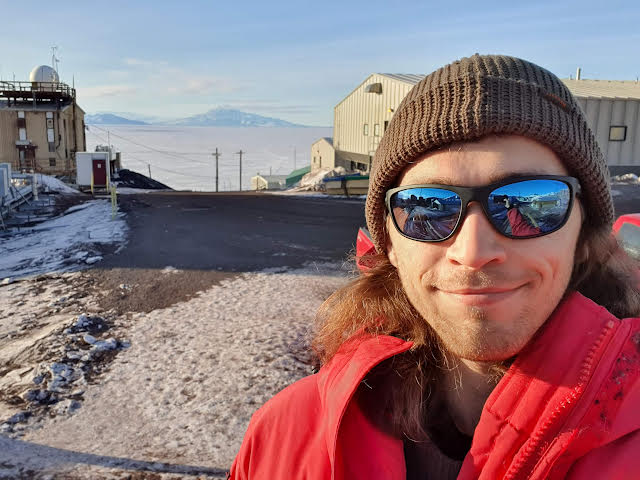 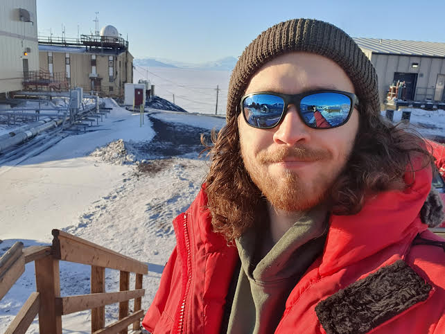 A photo taken on my first day at McMurdo (top) next to a photo taken one year later (bottom), maybe just a little rougher around the edges. 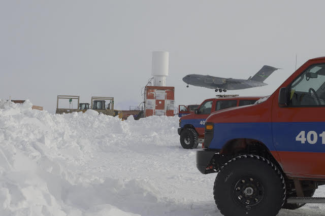 A cargo plane arriving to take 12 of us winter- overs back to the world. 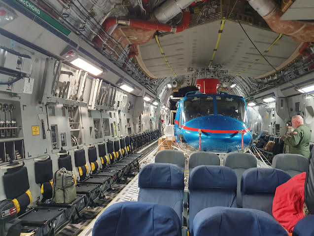 The inside of the cargo plane. A helicopter joined us for the ride north. 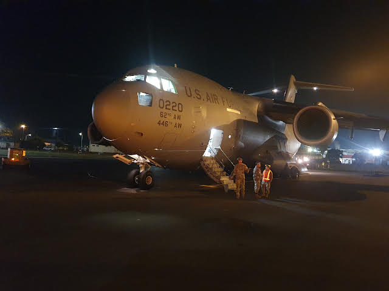 On the ground in Christchurch, New Zealand. 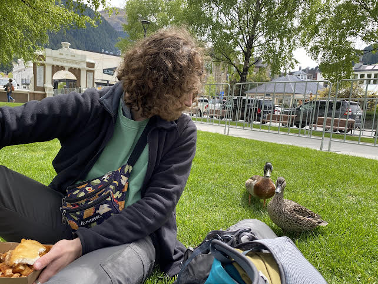 I can now be bothered by ducks again. Thanks for following along with me. Sincerely, Luke ------------------------------ ------------------------------ |